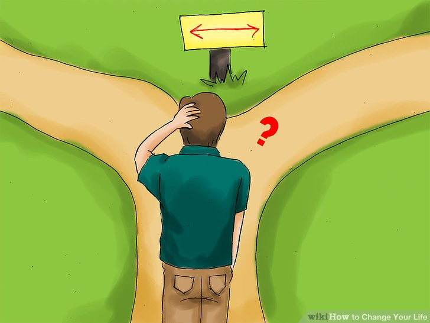

-
Change your routine. Remember that your reality is a result of the things you do on a daily basis, from what you eat for breakfast to where you go to work or school. If you're going to change your life's circumstances, you will have to change the things you do every single day.
Remember that you don’t have to change everything at once. Just trying one new change to your routine at a time can create progress. It can take a little time—66 days on average—for new habits to become second nature.[1]
Making even the smallest changes to your daily routine can help you feel less bored with life. For example, take a different route to work, eat something new for breakfast, exercise before school rather than afterward, or stop at a different coffee shop. Small changes like these may seem insignificant, but they will make your life more interesting in the long run by adding variety.
Ask yourself this question on a routine basis: Is what I am doing (or not doing) helping me get where I want to be? This applies to what you eat, whether or not you exercise, and what you spend the bulk of your day doing. If the answer is no, then make the necessary change.

-
Examine your life's path. Whether you are in school, working, job hunting, volunteering, or travelling, take a look at your life and decide if it aligns with your values.
What are your passions, interests, and goals? While these questions may take years to answer, you can start by asking yourself what kind of legacy you want to leave behind. This question applies not only to your career, but to your relationships as well. How would you like to be described and remembered by other people?
Determine whether or not your lifestyle is aligned with your personal values. Chances are, to some extent, your life and your values conflict. What could you be doing differently to help you reach your goals? You may want to consider changing your career path, changing your major, changing where you live, and changing the way you manage your time and money.
Improve your relationships. No matter how much money you make or how great your accomplishments are, you will not be able to enjoy your success if you don't have loved ones to share it with.
Work on the relationships you already have. Be sure to spend quality time with loved ones, and treat them with compassion and understanding. If have been neglecting or arguing with a loved one, then devote some time to reconciling the relationship. You must be willing to make compromises and even admit that you were wrong.
Make new, meaningful relationships with others. If you are feeling lonely, then you will have to stop waiting around for others to approach you. Take matters into your own hands, and get proactive. Put yourself in social situations, strike up conversations, and remember to always have a smile on your face. This is the best way to attract other people.